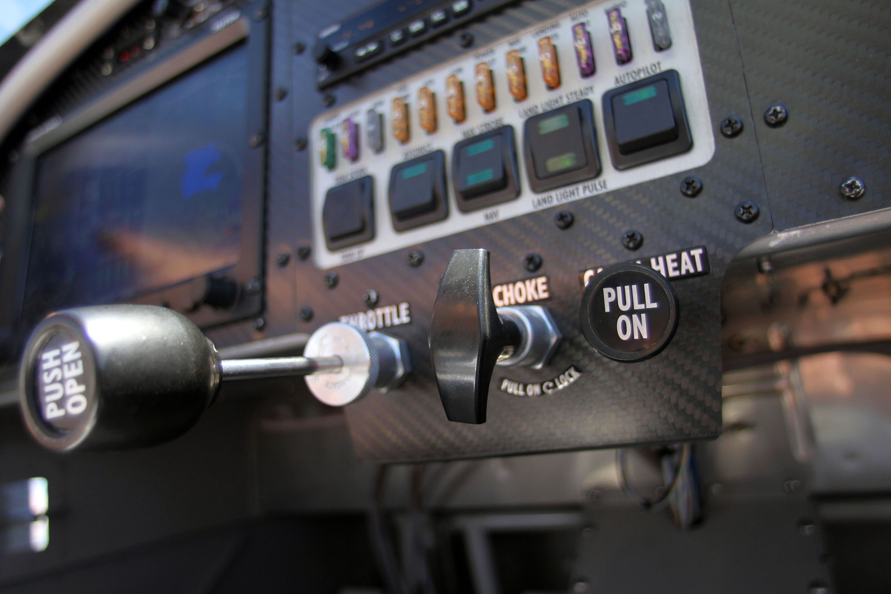

Imagine flying 4,000 feet above the Willamette Valley in a two-seater airplane, with a 180-degree view that on a clear day can range from snow-capped Mount Hood in the north to brilliant blue Crater Lake in the south.
For Lane Aviation Academy students, that can be a near-daily sight. And now they can see it from the comfort of two newly acquired RV-12 light sport aircraft.
The two airplanes, which cost $115,000 each, come equipped with many instruments and a state-of-the-art design that makes them safer than others in Lane Community College’s current fleet, said Steve Boulton, aviation academy director.
For starters, the planes have a lighter shell than other planes in the fleet, Boulton said. “That allows students to have more control over the direction of the plane while in the air,” he said.
Another factor that contributes to the two planes being better for instruction is their full autopilot capability. Boulton said that allows him to provide one-on-one instruction without the students having to focus their attention on flying the plane.
For a typical training flight, Boulton likes to average two to 2 ½ hours. Other planes in the program’s fleet carry enough fuel for a maximum three-hour flight. But the new RV-12s have a capacity for 20 gallons, which allows them to be in the air for about four hours, Boulton said.
Boulton had the planes painted with Lane Aviation Academy's logo to help advertise his program during training flights.

The RV-12s are built with a smoother throttle and choke than other light sport air crafts. In addition, the RV-12's have a full-autopilot, which allows Boulton to have more personalized instruction with the students while in the air.
The planes come equipped from the factory with removable wings, a function that allows the planes to be stored in smaller hangars.
The RV-12s come equipped with single-wheel axles, which allow the plane to be turned 360 degrees at a dead stop.
The planes have a shorter router, which allows for easier handling during flights.
The RV-12s also are equipped with ergonomically designed seating, durable interior matte paint, upholstered interior, 12-volt power outlet, day and night LED lighting for added safety, and removable wings for easier storage.
The purchase of the planes is a milestone in Boulton’s tenure as the program’s director. When he took over five years ago, Boulton said he had zero budget for advertising and expansion. To obtain money for the planes, Boulton worked with the college to assemble private funding and grants.
The RV-12s are built at Synergy Air at the Eugene Airport. The company trains people interested in aviation mechanics in how to build planes.
Chris Thelan, a production test pilot with Synergy, said he thinks the RV-12s are easier for a beginner pilot to learn in than any of the other models that the company produces.
“One of the biggest things that make these easier to fly is that they can be flown at slower airspeeds,” Thelan said. “For example, in a typical light sport aircraft, you have to approach the runway at about 65 knots, but in the RV-12s, you can approach the runway at about 55 knots, making them easier to handle for beginners.”
During a typical training flight, Boulton says that they range from 4,000-10,000 feet depending on the type of training. Boulton also says that one of his favorite things about being in the air is that you're in control of where you go, and you can see as far as the horizon allows.
As program director, Boulton said his goal is to help graduates secure positions in a highly competitive industry. According to the Bureau of Labor and Statistics, there were an estimated 104,000 jobs for commercial pilots in 2012, compared with an estimated 119,000 who received pilot certifications.
Boulton hopes the new planes will better position the program to help students pursue a career in commercial aviation.
“In our industry, I’m noticing a need for more well-trained pilots,” Boulton said. “With these RV-12s, I think we’re going to be able to both expand our program and train pilots in such a fashion that they’ll be able to get good, well-paying jobs.”